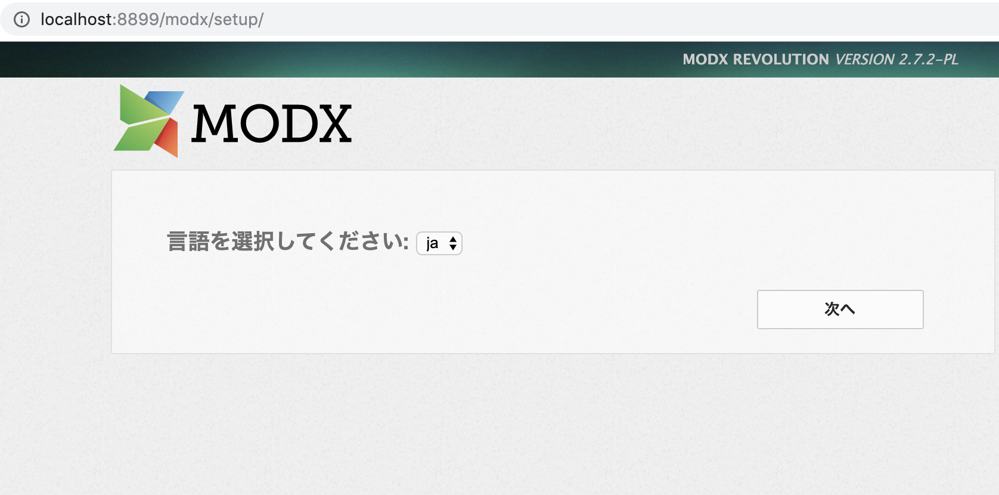

用docker搭建MODX环境(nginx,mysql,php)
什么是CMS
有人会问什么是CMS,比如说有一组动态页面需要维护,这对静态页面（HTML+CSS+Javascript写出来的页面）来说是一件很麻烦的事情。
比如有变化你要用手一个一个的改。
为了解决这个问题，于是出现了适合Web的动态语言，比如ASP，PHP等，它们把数据保存在数据库中，可以动态的引用，这样就能减少coding成本从而产生出比较大规模的网站了。这就是CMS了。CMS主要是用来做静态发布的网站,CMS功能简单来说,就是拿模板套数据库里的具体文章数据,然后发布成静态页面。
CMS基本功能模块不仅有上文所述的「文章发布」,通常CMS还有一个「后台管理功能」模块，拿MODX来说就是安装后的./manager管理页面。
这是CMS最基本的2个功能模块。
什么是MODX
The easy-to-use content management platform (CMS), modx gives you total creative freedom without having to code.
MODX也是一个友好的CMS(内容管理系统)！但是国内貌似并不流行。
今天的主题就是讲讲如何用docker搭建环境并安装MODX。
安装步骤
1. 安装docker
首先安装docker

在mac右上角出现docker的标志就说明启动成功了
2.将下面的Repository下载或克隆到本地
3. 设置nginx的服务器名
nginx/site.conf文件为nginx服务器的设置文件，在这里我们要将server里设置成我们的本地服务器，并设置监听端口号
为了不与其他的端口号重复，在这里我们将端口号设置为8899.其他的设置不需要修改.
※注意不要漏了分号
1 | server { |